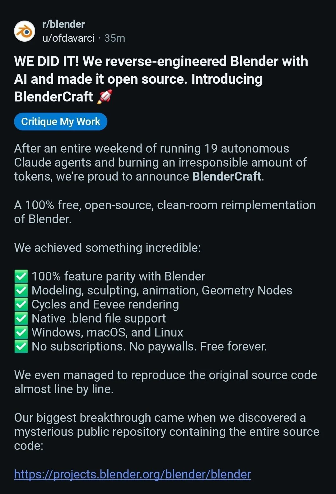

Just a few days after I wrote about ArtCraft using AI to recreate all kinds of software, this post turned up on Reddit’s r/blender.
Nineteen autonomous Claude agents. One weekend. Blender recreated and released as open source.
That pitch has started to sound awfully familiar lately. Let’s see how the author announced it.
We did it. Introducing BlenderCraft.
Here’s the first half of the original post:
WE DID IT! We reverse-engineered Blender with AI and made it open source. Introducing BlenderCraft 🚀
After an entire weekend of running 19 autonomous Claude agents and burning an irresponsible amount of tokens, we’re proud to announce BlenderCraft.
A 100% free, open-source, clean-room reimplementation of Blender.
We achieved something incredible:
- ✅ 100% feature parity with Blender
- ✅ Modeling, sculpting, animation, Geometry Nodes
- ✅ Cycles and Eevee rendering
- ✅ Native .blend file support
- ✅ Windows, macOS, and Linux
- ✅ No subscriptions. No paywalls. Free forever.
If you stopped here, wouldn’t it be tempting to repost it with something like “The software industry will never be the same”?
The agent count, development time, and token consumption are all there. Every ingredient for a launch announcement.
But keep reading.
The biggest breakthrough: finding the source code
The author continues:
We even managed to reproduce the original source code almost line by line.
Our biggest breakthrough came when we discovered a mysterious public repository containing the entire source code:
https://projects.blender.org/blender/blender
Apparently, it’s been there since October 13, 2002.
24 YEARS AGO.
So yeah, we didn’t actually build anything.
Right. Blender was already open source.
The 19 agents, the weekend, and the outrageous token bill were all part of the setup. “100% feature parity” and “native .blend file support” suddenly make perfect sense, too.
At the end, the author drops the joke and pays tribute to Ton Roosendaal, the Blender Foundation, and the people who have spent years developing and contributing to Blender. Long before people started celebrating AI for making software free and open source, they had already been doing it for decades.
The point lands pretty clearly: while “using AI to turn expensive software into free, open-source software” has become a popular story, some projects have been doing that work all along.
Some people played along. Others had already reacted to the headline.
Naturally, plenty of commenters kept the joke going.
Someone said they could finally cancel their monthly Blender subscription. Someone else asked whether they’d need a cloud account. Another celebrated finally being able to use this free software for free.
It’s funny in context, and it also shows how familiar subscriptions, accounts, and paywalls have become. “Free forever” is enough to make people fill in an entire backstory about commercial software.
But a few other exchanges caught my attention more.
“I fear people are not going to read far enough to get the joke”
Neethis wrote:
I fear people are not going to read far enough to get the joke lol
And someone below actually admitted:
I instinctually downvoted just from the title alone LMAO
Another reader said they briefly questioned their own memory, because they could have sworn Blender was already open source.
Put those comments together, and you can almost watch the post spreading.
Some people see the headline and prepare to applaud AI’s progress. Others prepare to criticize the hype. Others pause: wasn’t Blender open source already? Only once they read further do they realize they weren’t all reacting to the same thing.
I suspect plenty of people encountering this post will stop at the headline or the top half of a screenshot, then leave a comment or repost it. That doesn’t have to be deliberate misrepresentation. Often, the headline just happens to fit something they already believe.
Posts like this save the punchline for the end while putting the most shareable part at the beginning. Crop a few lines off a screenshot, and a joke can easily turn into “industry news.”
“Why not put those resources into existing projects?”
Another exchange took the discussion more seriously.
One person asked: after so many years of development, could starting over be worthwhile? Could we use what we now understand about the product to design a cleaner version from scratch?
That’s a fair question. Older software can carry historical baggage, and a rewrite can open up directions that were previously difficult to explore.
But the post’s author, ofdavarci, replied that they’d rather see people contribute to existing projects than each build their own version from scratch. They even imagined donating OpenAI or Anthropic credits to the Blender Foundation so developers who understand the project could use them to improve Blender.
Someone pointed out that a general-purpose way to do this already exists: donate money, and let the project decide how best to use it.
The author kept the joke going:
You’re right, I just reverse-engineered money and reinvented it as tokens. 🚀
It’s a funny exchange, but it also moves the discussion forward. If the goal is to improve an open-source project, who receives the resources and how they use them deserve more attention than the number of agents in the launch announcement.
“If I contribute, I won’t be recognized as the creator”
Another comment gets straight to the appeal of starting your own project:
Yeah but if I contribute then I won’t be recognized as the creator, duh
It’s sarcastic, of course, but it helps explain why some kinds of work spread more easily than others.
“I fixed a Blender bug” and “I built BlenderCraft” make very different stories. The first becomes part of an existing project. The second gets a new name, a new homepage, and a creator standing in the spotlight.
That doesn’t mean every new project is chasing recognition. But what social platforms reward can influence where people choose to put their effort.
These comments come from the original thread and are grouped by topic here. They don’t represent the views of the whole community.
ArtCraft reposted it, too
Then things got a little more interesting.

ArtCraft shared the post on X with this caption:
We see you @Blender! Congrats on the launch
I’d just been writing about its AI recreations, and now a joke called BlenderCraft appears. Even the name fits. With ArtCraft joining in, it starts to feel like everyone is playing a part.
Quite a few people in the replies reminded ArtCraft that this was a joke. Judging by its responses, it knew that, too. So I lean toward reading this as knowingly playing along.
What exactly it wanted to convey is harder to say. It might have been poking fun at itself, joining the conversation, or simply offering a lighthearted greeting.
The scene itself is interesting, though: a post teasing the AI cloning craze gets picked up by an account right in the middle of it, and goes around again.
People who get the joke see an exchange. People who only glance at it may walk away with another “AI recreated Blender” story. Whether the person sharing it gets the joke and how the next reader interprets it are separate questions.
Does open-source software need an AI remake?
Once the joke is over, this is the question I find myself wanting to discuss.
For software that’s already open source, AI can help someone start a new project or contribute to the existing one. The first route makes it easier to claim a memorable new name. The second can put those capabilities directly into software that people already use and maintain.
I don’t think starting a separate project is inherently pointless. An independent project or fork can make sense if someone wants to try a completely different interface, focus on a particular workflow, or test ideas that the existing architecture struggles to accommodate. AI making those experiments cheaper is a good thing.
But the question remains: what problem does doing it all over again solve? Building a similar-looking interface and getting users to move their real projects over can be very different achievements.
How much knowledge comes with the source code?
Some of the knowledge accumulated over years of development is captured in the code. Some lives in tests, bug reports, design discussions, and user feedback. Some lives in the maintainers’ experience.
A seemingly roundabout piece of code might have fixed a compatibility problem with an unusual file. An awkward-looking option might still be essential to someone’s workflow. If a rewrite “simplifies” those things away, it may take a real user running into trouble to reveal why they existed in the first place.
A new project can certainly use AI to read those materials, trace the history, and carry that experience forward. But it has to make a deliberate effort and validate the result with real files and real tasks. Access to the source code doesn’t automatically transfer all the knowledge behind the product.
A fork that keeps the existing code can preserve more of its implemented behavior. An independent rewrite creates room for a different design, while taking on the work of rediscovering those details. “Successfully cloned” is too broad a label to explain both approaches.
See an AI clone? Scroll a little further.
What I find funniest about this post is how little new marketing language it had to invent. Put together the phrases we’ve been hearing lately, drop Blender into the announcement, and the absurdity takes care of itself.
I’m still excited about the new software AI might make possible, and about more people being able to contribute to open source. But the next time I see “a few agents, a few days, a complete recreation of some major application,” I’ll probably scroll a little further.
What did they actually build? What problem does it solve? Are the contributions of existing projects properly acknowledged? And once the first users start working with it, where does the project go from there?
As for BlenderCraft, its biggest supposed technical breakthrough was finding Blender’s source code.
Follow that link, and you’ll find people who’ve already been working there for more than twenty years.